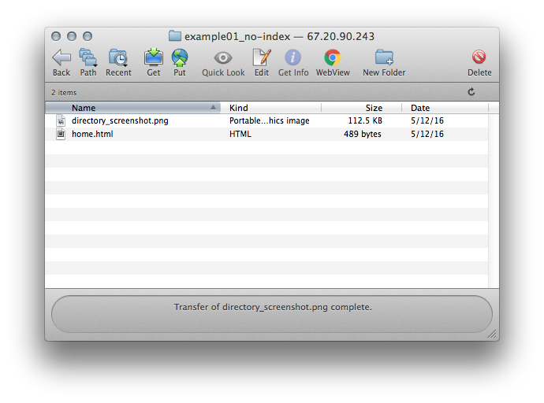

Because this file is not named index.html, to view this page, we first have to click on the file from the default directory listing presented by the server.
In Fetch, this directory (example01_no-index) looks like this: 